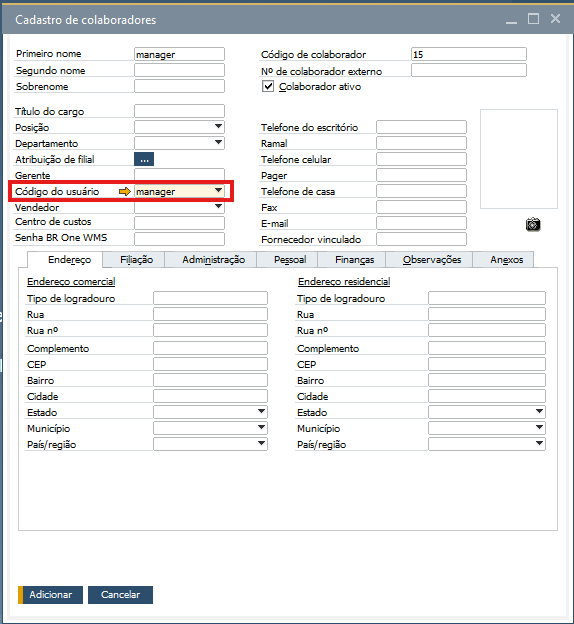

Configurações iniciais
Para que seja possível realizar o primeiro acesso no aplicativo, serão necessárias algumas configurações iniciais.
Configuração de servidor

Ao abrir o aplicativo, no canto superior direito, existe um ícone de engrenagem, ao clica-lo, tem-se acesso a tela de configuração de servidor.

- A tela de configuração é composta pelos seguintes campos:
Servidor: Endereço IPV4 do servidor onde o API do WMS foi configurado.
Porta: Porta logica onde o API do WMS foi configurado via IIS.
Base de dados: Nome da base SAP onde as transações serão realizadas.
Filial padrão: Código da filial onde as transações serão realizadas.

Ao inserir todos os dados e testar a conexão, clique em Salvar para que a configuração seja utilizada no momento em que o usuário acessar o aplicativo.
Cadastro de usuário no WMS
Para criar um usuário no WMS, é necessário que no SAP o Cadastro de usuário esteja vinculado a um Cadastro do colaborador. Esse vínculo pode ser feito no SAP através do menu Cadastro de colaboradores, no campo Código do usuário.

Para criar uma senha, basta preencher o campo Senha BR One WMS com a senha desejada.

Ao finalizar o cadastro de usuário WMS, é importante definir as autorizações de utilização do mesmo.
Configuração de Armazéns

No SAP Business One, em Módulos > Administração > Definição > BR One WMS > Cadastro do armazém, crie o(s) armazém(ens) vinculado(s) a filial desejada.

Não existindo um Cadastro do Armazém vinculado a filial, na tentiva de realizar o login será exibida a mensagem do GIF a cima.


Certifique-se que, após a criação dos Armazéns, os usuários estejam vinculados a pelo menos uma filial, caso contrário, será exibida a mensagem a cima, solicitando a alteraração da filial de acesso.

No SAP Business One, em Módulos > Administração > Definição > BR One WMS > Configurações WMS, defina nas abas Geral, Recebimento e Expedição, pelo menos um usuário para o recebimento de mensagens/alertas.

Uma vez definidos os usuários para o recebimento das mensagens/alertas, serão exibidas para os usuários diretamente na Visão geral de mensagens/alertas.
No SAP Business One, em Módulos > Administração > Definição > BR One WMS > Cadastro de motivo de ajuste, defina as contas contábeis que serão utilizadas no processo de Ajuste de estoque.